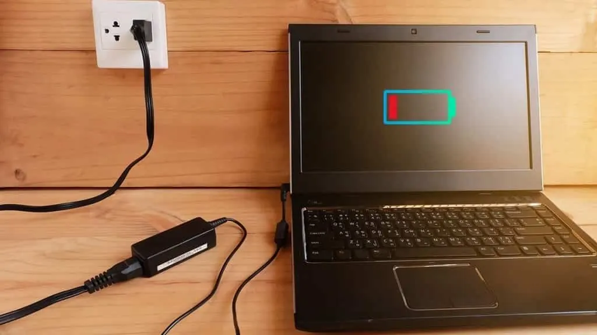
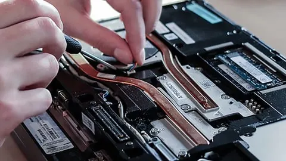

Laptops
Laptop Won't Turn On? What to Check Before Calling a Technician
A safe troubleshooting guide for a laptop that will not power on, covering charging, displays, power resets and warning signs.
Introduction: Work Out What 'Won't Turn On' Means
This can be very concerning if your laptop refuses to turn on. There are many reasons why your laptop might not be turning on. It could be refusing to power on, not turning on or having a logo but not loading.
Below are some things to consider. Ensure that there are no simple fixes that can be done before disassembling your laptop. Make sure the laptop is not hot, swollen, damp, smoking or burning.

Check power outlet and charger
Ensure that your outlet is working by plugging in another device. If you are using a power strip ensure that the switch is on and plugged in. Ensure your charger is plugged directly into a working outlet. Check that there is no obvious damage to your adapter, cable or plug.
Ensure you are using a compatible charger. If you are using a 3rd party charger ensure it is approved by the manufacturer and has the correct spec. Even if the laptop fits the charger, it may not have the right voltage. If using a USB-C charger ensure your laptop can be charged through this port. Ensure that your adapter and cable are of the correct wattage. Don’t use a faulty charger.
Check for power indicator
Plug in your charger and ensure that there is a power indicator. You may have different indicators dependant on the manufacturer. If there is no power indicators then you may have a problem with the outlet, adapter, cable, charging port or power circuitry within your laptop. If there is a power indicator but your laptop still won’t power on then continue to the next step.
Charge your laptop for the recommended amount of time. If your laptop is completely dead you may need to charge it for longer. If your laptop is becoming very hot while charging do not leave it.

Laptop powering on but no display
Your laptop may be powering on but there is no display. Ensure you can hear fans running. Check that there are any lights on your keyboard or power indicators. Increase the display brightness via the keyboard. If your laptop can be connected to an external monitor ensure that it is connected to the correct port. Ensure that you have selected the correct input.
If your external display works then your issue may be with your laptop display, backlight, cable or display settings. If your external display is not working then there may be a different issue. Don’t press too hard on your display or open/close your laptop multiple times.
Remove all peripherals
Ensure that any USB devices, docking stations, external storage, memory cards, printers or other peripherals are removed. Sometimes faulty peripherals or docking stations can prevent your laptop from powering on. Ensure only your power adapter is plugged in and power on your laptop.
If your laptop powers on with nothing plugged in, plug in your peripherals one by one. Ensure you are only using the recommended ports and not damaged cables. If your laptop is still not responding then continue to the next step.
Power reset
Sometimes laptops can become stuck in a low power/sleep state. To reset your power you will need to power reset your laptop. This can vary depending on your model. Some manufacturers will ask you to unplug your laptop and hold the power button for a certain amount of time. Some have a reset hole or button combination.
Check your official support page for your specific model. Don’t poke any holes with a pin. If your laptop has a removable battery ensure that it says so in the service guide. Once you have completed your reset plug in your approved charger and try to power on.
Dead or old battery
If your battery is completely dead or old it may not provide enough power to your laptop. If your laptop will power on while charging refer to the manufacturers instructions on how to check. If your laptop has a sealed battery do not attempt to remove it.
If your battery is swollen, the casing is coming apart, the trackpad is raised or the battery is becoming very hot then stop using and charging. Don’t press down on the casing. Don’t puncture your battery. Take your laptop to a qualified technician as a damaged lithium ion battery can be dangerous.
Error lights/beeps
Some laptops will have error lights. These can be flashing LED’s, beeping or error messages. Note what is happening and refer to your manufacturers support page. Your issue may be with your memory, storage, display or system board.
Do not assume that the beeping code means the same across brands. If your laptop is powering on with a logo and then stopping note where it is stopping. This can help a technician pinpoint the issue.
Backup Data
If your laptop is powering on after completing the previous steps then backup any important data. Your laptop may have issues with powering on so backup your data to a trusted external drive or approved cloud service. Ensure you can open your files.
Don’t attempt to run multiple repair tools or re-install your operating system. Firstly backup your personal and work data. If your laptop is constantly losing power take it to be checked.
DON’T
Don’t press your power button repeatedly, open up your power adapter, use a hair dryer to warm up your laptop, place in the fridge or attempt to jump start your battery. Don’t use a charger with unknown specs. Don’t open up your laptop if it is sealed and you do not have the correct service documents and tools.
If your laptop has any liquid damage turn it off and unplug if possible. Don’t attempt to power it on as this can cause further damage. Take it to be serviced and inform them what liquid it was and when it occurred.
When to see a technician
If you have no power indicators, you have confirmed that your outlet is working and your charger is correct but your charging port is loose/faulty. If your laptop is constantly shutting down, has a black screen after basic checks or error lights indicating a hardware issue. If your laptop is swollen, smoking, burning, has liquid damage or overheating then take it to be looked at.
Before taking your laptop to be serviced note down your model, charger details, any lights/sounds and what you have tried. Ask if they charge for diagnostics, how they will deal with your data and if your files could be affected. If your laptop is still under warranty look into how they deal with their service from the manufacturer.
Conclusion
If your laptop is not powering on make sure your outlet, approved charger, power indicators and peripherals are correct. If your laptop is powering on but has a black screen. Only use the correct power reset for your specific model. If your laptop is powering on then backup your data. If you notice that your battery is swollen, has any liquid damage, smoking or burning then stop using it. If you cannot find the issue after basic checks then a technician will be able to safely test your charging system and hardware.
Need a hand with your printer or laptop?
Printerworld sells printers, laptops and genuine supplies, and repairs and services both. Bring in your model number and we will help you get it right.